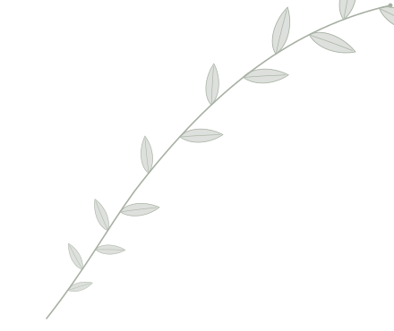
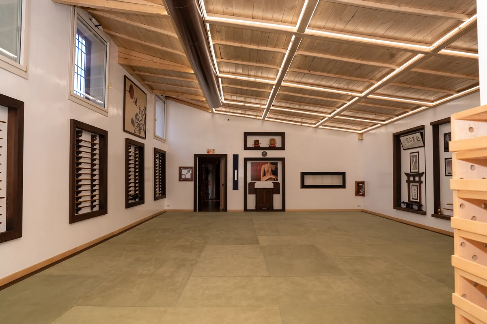
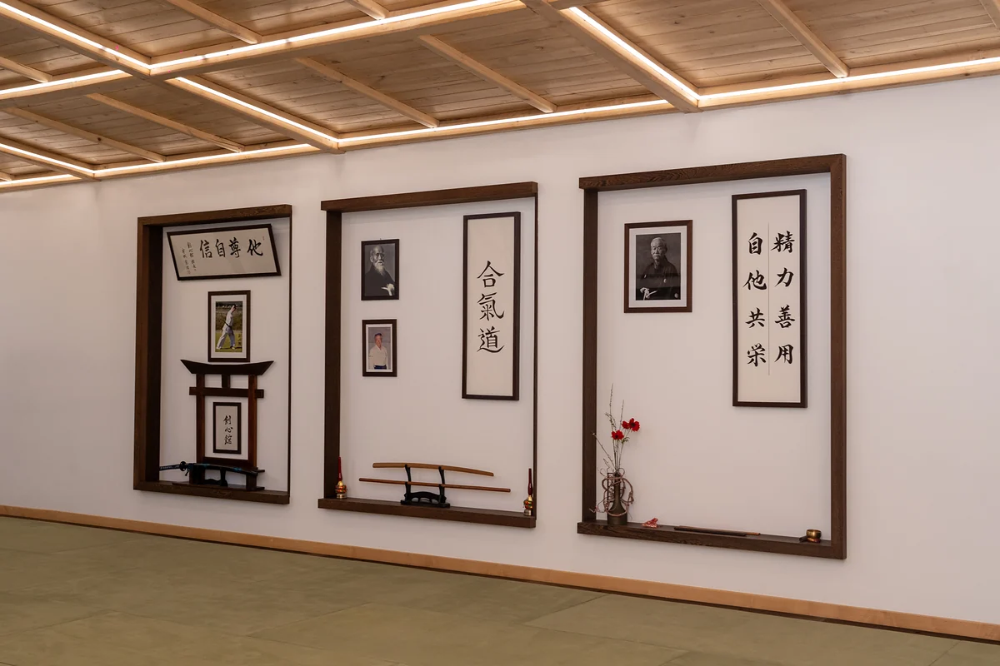

Il Dojo
Il Pranavia Dojo a Roma è una struttura all’avanguardia di recente costruzione. Un luogo di pratica di discipline del benessere e arti marziali.
ApprofondisciCorsi
-
Aikido
L’Aikido è una arte marziale che trae le sue origini dalle più antiche arti marziali giapponesi.
-
Karate
L’obiettivo della pratica del Soshinkan Ushiro Karate è ottenere un corpo forte, l’armonia dello spirito e la pace nel cuore attraverso il Kata che racchiude 600 anni di storia di Okinawa e le sue tecniche come arte marziale.
-
Judo
Il Judo è una disciplina orientale, di origini giapponesi, nata nel 1882 per merito di Jigoro Kano.
-
Pilates
Il metodo Pilates, o semplicemente Pilates, è un sistema di allenamento che mira a rafforzare il corpo, a modellarlo, a correggere la postura e a migliorare la fluidità e la precisione dei movimenti.
-
Yoga
Una pratica tradizionale che porta con sé la saggezza dei grandi maestri.
-
CQC / Pencak Silat / Kali Escrima
Il CQC è un metodo di difesa personale a distanza ravvicinata.

Le origini del dojo
Il termine dojo, letteralmente “luogo dove si segue la via” trova la sua origine nella cultura giapponese, dove viene utilizzato per indicare il luogo in cui avviene la pratica delle arti marziali.
Approfondisci


Iscriviti a un corso
Contattaci per informazioni sui corsi o per prenotare una lezione di prova gratuita e senza impegno.